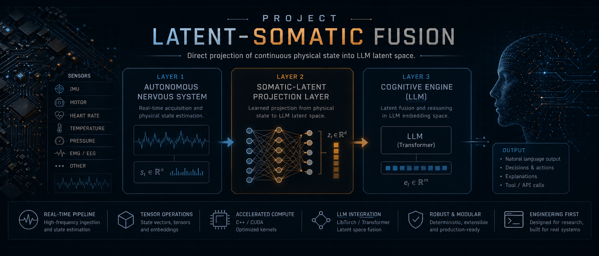

An open-hardware, open-source architecture that enables a Large Language Model to perceive continuous physical reality — voltage, heat, gravity, motion — not as text tokens, but as native vectors injected directly into its attention mechanism.

Each layer runs in an independent thread, communicating through lock-free shared buffers.
Dedicated C++ thread polling hardware sensors at 100 Hz via I²C/SPI. Owns the hardware lock, performs homeostatic monitoring and triggers survival overrides without waiting for the LLM.
A LibTorch MLP maps the 11-dimensional physical state vector into the 4096-dimensional embedding space of the target LLM. Trained via contrastive learning to align physical states with semantic descriptions.
The somatic vector is injected as token-0 in the KV cache using llama_batch.embd, bypassing the tokenizer entirely. The transformer attends over [somatic_token | text_tokens] natively.
llama_batch.embd (raw float array)Why bypassing the tokenizer is not a trick, but a mathematical necessity.
Standard LLMs perceive the world through a vocabulary of discrete tokens. When a sensor reading of 9.81 is passed as text, the tokenizer splits it into the character sequences 9, ., 8, 1 — four independent tokens whose embedding vectors carry no inherent notion of physical magnitude, continuity, or temporal relationship.
This is not merely inefficient. It is architecturally incompatible with physical reality. A voltage reading is a point on a continuous manifold. A token is a discrete symbol in a finite vocabulary. The information structures are incommensurable.
LSF posits that a sufficiently trained MLP can learn a smooth, differentiable mapping from the space of physical sensor measurements ℝᴺ into the high-dimensional semantic embedding space ℝᴰ of an LLM such that semantically related physical states map to geometrically proximal regions.
Once Vₛ is in the LLM's embedding space, it is concatenated with text token embeddings before the first attention layer. The transformer computes cross-attention naturally over the combined sequence:
From raw hardware bits to LLM-generated language in under 200ms.
std::mutex-guarded struct. Survival threshold check runs before lock acquisition.snapshot(). LayerNorm on output. torch::NoGradGuard for inference efficiency.llama_batch with embd set. KV cache cleared, somatic decoded at pos=0.max_new_tokens.Three sensor families map the body. All connected via I²C on a shared bus with distinct addresses.
Full-pack fuel gauge via I²C. Reports voltage at reg 0x08 (mV resolution) and signed current at reg 0x0A. Critical threshold: 10.5V triggers survival callback in hardware thread, independent of cognitive loop.
6-axis MEMS sensor. Accelerometer ±16g at 16-bit, gyroscope ±2000 dps at 16-bit. Sampled at 100Hz. Gravity vector at (0, 0, −9.81) m/s² when upright provides baseline orientation reference.
±0.1°C accuracy, 16-bit resolution (0.0078125°C/LSB). Monitors silicon die temperature and both motor windings. Critical threshold: 85°C triggers immediate power reduction. Three units on shared I²C bus with address selection.
I²C bus on GPIO pins 3 (SDA) and 5 (SCL). CPU inference for LLM (Pi 5 @ ~0.3 tok/s), GPU inference on Jetson Nano (CUDA). Both LibTorch and llama.cpp compile natively on ARM64.
Motor speed control through hardware PWM. Survival callback can directly assert GPIO overrides at the hardware thread level, bypassing any LLM-generated motor commands. Physical safety is architecturally separate from cognition.
3-cell LiPo nominal 11.1V (full 12.6V, critical 10.5V). Separate 5V regulated rail for compute. Current sensor monitors drain patterns. High-current draw events are flagged in the somatic state vector as metabolic load signals.
From zero to a running system. Linux x86-64 or ARM64 (Raspberry Pi / Jetson).
# 1. Reuse the existing llama.cpp checkout on this machine LLAMA_CPP_ROOT=/home/funboy/llama.cpp cmake -S "$LLAMA_CPP_ROOT" -B "$LLAMA_CPP_ROOT/build" \ -DGGML_CUDA=OFF # ON if NVIDIA GPU available -DCMAKE_BUILD_TYPE=Release cmake --build "$LLAMA_CPP_ROOT/build" -j$(nproc) # 2. Install PyTorch (CPU build) pip install torch --index-url \ https://download.pytorch.org/whl/cpu # 3. Train the somatic projector pip install sentence-transformers python train/train_projector.py \ --epochs 200 --batch-size 32 \ --output weights/somatic_projector.pt # 4. Build the C++ binary TORCH_CMAKE=$(python3 -c 'import torch; \ print(torch.utils.cmake_prefix_path)') cmake -S . -B build \ -DTORCH_DIR=$TORCH_CMAKE \ -DLLAMA_DIR=$LLAMA_CPP_ROOT cmake --build build -j$(nproc) # 5. Download a model and run ./build/latent_somatic models/llama3-8b-q4.gguf
GCC ≥ 13, CMake ≥ 3.20 (install via pip install cmake), ninja. LibTorch via PyTorch wheel.
Use the existing checkout at /home/funboy/llama.cpp. Build with -DGGML_CUDA=ON if NVIDIA GPU available. Library at build/bin/libllama.so.
Extend CANONICAL_PAIRS in train_projector.py or provide a JSONL file via --extra-data. Each pair: {sensor: {...}, text: "..."}.
Replace mock readings in HWInterface::read_sensors_i2c(). Install libi2c-dev. Test with i2cdetect -y 1.
Any GGUF-format model. Recommended: Meta-Llama-3-8B-Instruct-Q4_K_M.gguf. Adjust n_gpu_layers in LLMConfig for your VRAM.
Set LD_LIBRARY_PATH to include llama.cpp/build/bin. Add to .bashrc for persistence.
LSF is architecturally aligned with the emerging VLA and sensor-aware LLM literature. The industry arrived at the same conclusion independently.
Introduces a projection-layer architecture that maps raw gyroscope/accelerometer streams directly into the LLM's shared representation space, bypassing textual serialization. Demonstrates that temporal relationships destroyed by tokenization are preserved when embedding natively.
Vision-Language-Action model integrating thermal, acoustic, and mmWave radar sensors alongside RGB video. Per-sensor MLP modules project each modality into shared token space. Proves cross-attention over heterogeneous physical inputs improves manipulation success rate dramatically over visual-only baselines.
Formalizes the tokenizer-incompatibility problem: a character-tokenized "9.81" loses physical magnitude entirely. Trains a sensor embedding space via contrastive learning to align time-series sensor signals with semantic concepts — the exact technique used in LSF's training pipeline.
OpenAI's foundational work on cross-modal contrastive alignment. The InfoNCE symmetric loss and learned temperature τ used in LSF's train_projector.py are direct applications of CLIP's methodology, adapted from visual patches to physical sensor vectors.
The technical mechanism used in LSF (injecting non-token embeddings into the KV cache via llama_batch.embd) is the same mechanism LLaVA uses to inject visual patch embeddings. LSF extends this pattern from 2D visual space to 11-dimensional physical sensor space.
LSF's novel contribution: using somatic injection not to command actuators (robotics) but to ground the LLM's self-model in real physical state — enabling genuine homeostatic language. The system's words are structurally conditioned on whether it is falling, overheating, or starving for power.
C++ public interfaces and Python training API.
HWInterface(cb)SurvivalCallback fired on critical thresholds, lock-free.hw.start()hw.snapshot()HardwareState struct (11 floats).project_state(S, dev, jit, nn)HardwareState → torch::Tensor[1, 4096]. Uses TorchScript module if available, nn::Module fallback.llm.generate(sv, dim, prompt)llm.embed_text(text)std::vector<float> of size n_embd — the sequence embedding for a text string. Useful for alignment debugging.train_projector.py--epochs N --batch-size N --augment N --extra-data path.jsonl --output weights/proj.pt--eval-onlyweights/somatic_projector_adapter.pth.